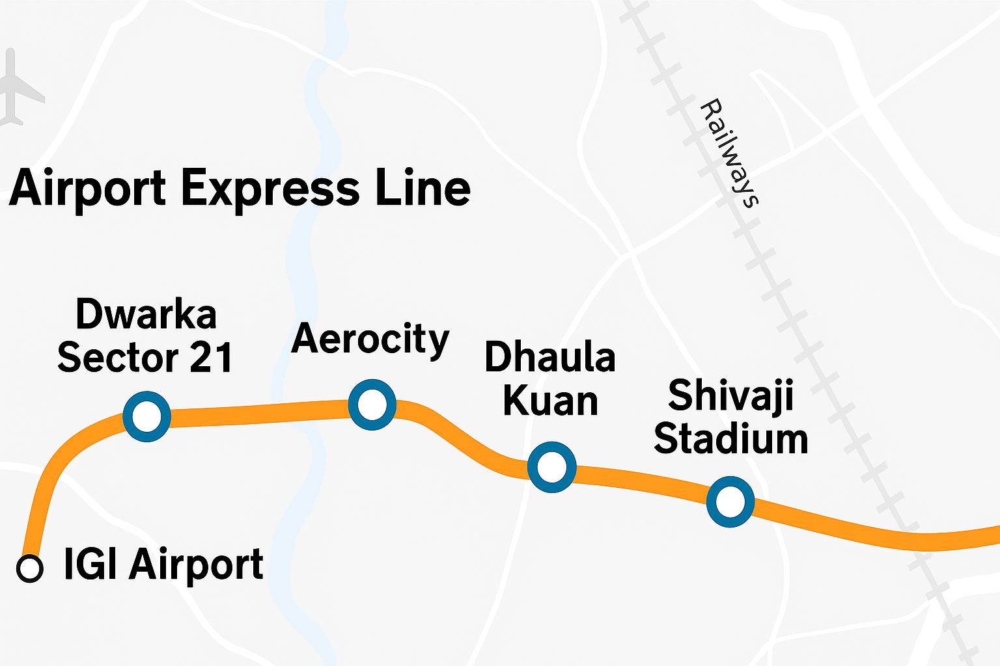
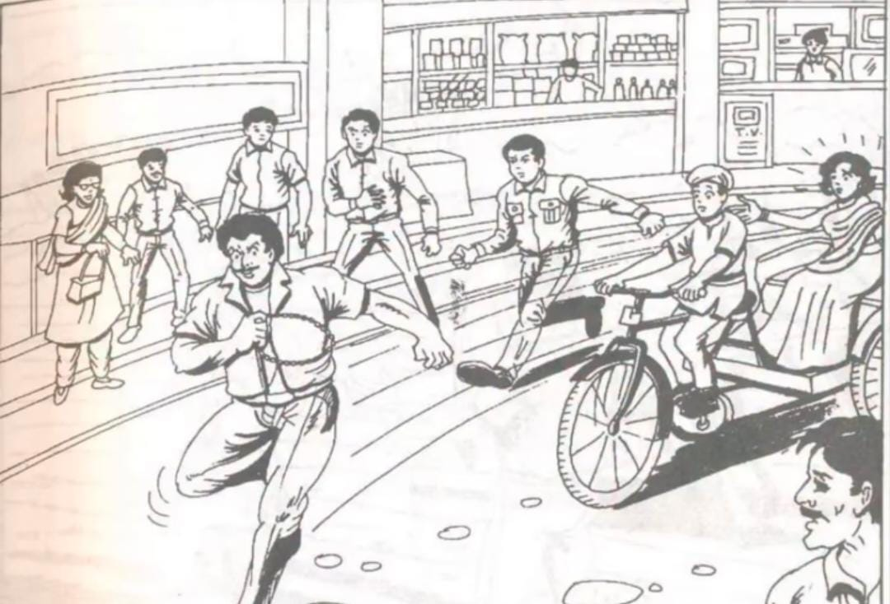
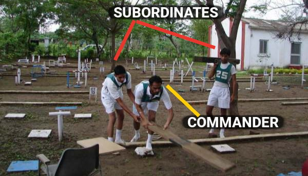

Welcome, I recently went to Prayagraj to spend 5 days at the SSB interview for NDA-055 entry, the experience was new, full of learnings and joy! This page shall discuss the things I did before going to the centre, how the duration was spent and how it felt after the results.
Myself Akshay, I passed 12th grade in May 2025, I appeared for NDA in the previous month. This was my first attempt, the experience for which I shall be describing divided into days.
SSB - Service Selection Board is a procedure for recruiting people into the Indian defence forces – Indian Army, Indian Navy and Indian Air Force. It is a 5-day long process. Candidates aged 16.5 to 42 years appear for the selection process. The acceptance rate is significantly low, which also causes it to be infamously deemed as a very hard to crack exam.
I had to start from New Delhi railway station, I got there by Metro. In delhi, metros are a huge convenience and a major reason why I want to continue living here despite the breath-choking pollution. There's a direct metro from Dwarka Sector 21 to New Delhi Railway Station, stopping at Dhaula Kuan and Indira Gandhi International Airport. I believe the main purpose of this rail line was to give a "comfortable experience" to the foreign tourists. The stations, from Dwarka Sec 21 to the final station were extremely clean. Deboarding at the Metro station of New Delhi takes you through an overhead bridge straight to the railway platforms.

The first day started by me reaching the Prayagraj Junction, it was about 3:30AM, I had gotten like 3 hours of sleep on the train, it was Shivganga Express, always on time.
We were supposed to report to the Movement Control Office (An abandoned small office) on the first platform.
As soon as I deboarded I was received by my best friend, Chitransh. The train was on the fourth platform, we took the footover bridge to reach platform 1, he had kept his luggage at the waiting room, we reached there.
We changed into formal clothes, Chitransh got his belt stolen. He luckily had a spare one with him.
We were at the MCO before 5AM. Let's just say the SSB officials were not very punctual.
By 6:10 we were in a bus, we were taken to the place where the testing happens, it was a restricted area for Army officials.
We were asked to form a line, after being divided into three groups, freshers (us), people who have been screened out before & repeaters candidates who were conferenced out. screening and conference are explained later
We spent about 90 minutes getting out documents verified.
After that we were sent to the candidates mess to have breakfast. It was two slices of bread with butter and jam, both of which were slapped onto the plate, getting sweet and salty mixed 💔
After this we appeared for two tests of 30 miutes and 40 questions each. Very simple ones, called OIR, I got everything right easily. For the first test all answers were marked already in my question booklet.
This test started at about 9AM. We were seated in a huge hall with a capacity of 250 people, there were 76 of us. They had a high power projector and a screen on the front. The psychologist arrived and gave us instructions. One picture, observe for 30s, write a story in 4 minutes, after which you're takent to another hall in groups of 10 students each, made to narrate your story, then discuss it with the group for 10 minutes and finally arrive at a common story and deliver it to the assesor panel the Interviewing Officer, the psychologist and the Group Testing Officer. The picture we were shown had a lady, a man, it was quite blurry so I could not pinpoint the gender of the lady, I assumed it to be a man, they were discussing something. Being the very productive guy I am, I let one of them be the Sarpanch of a village and the other be a doctor who wants to setup a medical camp (I might have written something else, I don't remember anymore.) After everyone wrote their stories and submitted it, we were taken out of the hall, into smaller rooms, 10 students each. This took about 10 minutes in which the candidates were either questioning each other's stories and declaring the results in advance OR recalling their story like their life depends on it. Me being a chill guy did not really think anything I talked about stuff with people around me, when we got into the smaller room, me and Chitransh were in the same group, everyone narrated their story. Some children wrote absolutely negative things like dowry etc. when done, the discussion started, which with 10 people was messy. We were divided into 2 subgroups of 5 each and the activity was soon concluded. We had to go back to the testing hall and sat there till the results were announced, at about 12:30. They were in order like such 1, 7, 32, 48, 75, 3, 6, 25, 35, 38, 71, 6,... creating fear of our name not being called everytime the list passed ahead of our chest number. Not sure if it was intentional but it was definitely scary. This test is also known as the screening test since supposedly candidates who don't suit the Army are screened out on this day without complete evaluation? For our batch, 38 of us were screneed in and the same number screened out. Me and Chitransh both got in. The screened out candidates were sent home thereafter.
Example PPDT Image
We were made to wait for about 30 minutes before being instructed to fill out some forms, arrange our documents, and get them verified. There is a cyber cafe in the campus itself, so children who did not have their complete documents still had the chance to get it printed out now. We were then given PIQ forms. We were made to fill them out. This was completed till 5PM or so, we were then given our phones for 30 minutes. We called our family, informed them of everything, unfortunately the reservation chart for my return ticket for the same day was already prepared, therefore, could not get a refund </3. We were then shown the place we were to stay, we had dinner and slept. That reminds me how you need to be in formal clothes while entering the mess everytime. So have fun changing clothes thrice a day 🫠
The second day is the psychology test. We had to wake up, get dressed and report at a reporting
shed by 6:20AM, a roll call took place and we were taken to the psychology testing hall, the psychologist arrived at 8AM, we were instructed for the first test, TAT (Thematic Appreciation Test) which is basically writing 11 PPDT stories in a row, with no discussion following it. Then a blank picture which you can yourself imagine and write for.
it was a tiring exercise, lasted 54 minutes, the main difference from PPDT is that the picture is not a scene you need to observe and arrive at in your story, it is a stimulus to generate a thought in your mind. It is not the picture on what you write a story, it is
the thought that picture triggers. Then comes WAT (Word Association Test), 15 minutes, 60 words, each word flashed for 15 seconds, you need to write the first thought that comes to your mind when you see the word. Then we had
SRT (Situation Reaction Test), 60 situations, 30 minutes, you tell how you'd react if stuck in such a situation. The last test was SDT (Self Description Test) where you had to write about yourself in 5 questions What do your [1. teachers 2. friends 3. parents 4. self] think of you? 5. What kind of a person do you wish to become?
The psychologist reads your answers and tries finding the OLQs in them.
We were free by 1PM, we had lunch, I had my interview the same day. It went well, a lot of questions about my friends, barely any theoretical things like news etc. but a lot about my personality and what my close ones think of me, what I do for them, what they do for me and so on... After this I returned, talked to friends, played table tennis and carrom, went to the library (it was air conditioned), we were given our phones for about 30 minutes in the evening, a roll call took place and we were briefed to report at a ground by 5:20AM tomorrow morning. The sleep was full of malaria and dengue.
The third day started with us reporting at the said place, the GTO(s) arrived, introduced themselves, the groups were like 6,7,8,10,7 people in each. I was in the group with 10 people. We started with Group Discussion. The GTO gives you two topics, each to be discussed for 20 minutes, no restrictions on the chaos, people shout like their lives depend on it, I believe
instead of that we should make sure the GTO hears us, too many cooks spoil a dish. He notices how much you contribute to exploring the topic not how many times you move your jaw.
It went pretty well, next was Group Planning exercise, one map, 3-5 problems, 10 people. You plan out how to deal with all problems, 10 minutes to write, 15 minutes to discuss the solutions amongst the group and thereafter you let the GTO know a commonly agreed upon solution.
Then we had Group Obstacle Race. 4 groups facing each other in a series of obstacles to finish first, holding a snake each to ensure one person does not complete all of them leaving his group behind. It was really tiring, did leave some scratches on a couple of students, there was always an ambulance on stand-by, so no reason to not try your hardest.
Then started PGT → progressive group task ← the group completes obstacles by using the helping material provided to them, some people dominate the group, some don't participate, influencing the group is what's checked here.
Then came HGT → half group task ← half the members in the group, half the chaos. The last task was lecturette. 3 minutes to prepare one topic of the 4 choice and 3 minutes to speak about it. I got uneployment, did great.
After the tiring day we were left free at about 11am, went back, ate lunch, played games, slept, roll call and phone freedom in the evening, were told to report by 5AM the next day. Goodnight.
Woke up, changed into GTO dress. Reported. The day started with Individual Obstacle Course. 10 obstacles, points ranging from 1-10, 3 minutes, can be attempted in any order. I did 5, 2 people in my group did 10, Chitransh did 2. Next was command task, PGT but you individually decide what to do. Time limit being 15 minutes. You get to call 2 people to help you carry the helping material and for manual help. Right before my turn, heavy rain started, I waited in the shed for 40 minutes, nature hated me so I had to lastly do it in the rain. We returned, revised what we could not answer in the interview (there was basically nothing) for the next day, wished each other luck and slept.
Time: 3 minutes
Goal: Complete as many as possible, Repeat allowed if time permits
Command Task
Individual Obstacle Course
The last day was the conference day. A group of all GTOs, psychologists, Interviewing officers of your SSB Board sit in a rount table to talk to you for a brief 2-3 minutes. They discuss the grades you secured in each field and declare your result based on it. We assembled in the conference hall, submitted our luggage at a shed, and waited, the deputy president of the board came in, explained OLQs to us, told us how extremely unbiased and flawless the slection process is, then one by one we were all called in, once finished sent to the shed to wait. Candidates who were done discussed a lot about who was going to get selected and who was not. Everyone was done by 11AM, then we were called back to the conference hall, an officer entered, declared the result, everyone who nobody expected to qualify did, me, all 10 people from my friend group and Chitransh too, were conferenced out. We went to a KFC, got something to eat and waited till 6PM for our bus to Delhi, slept next to each other on the upper deck and reached Kashmiri gate at 6AM, then home.